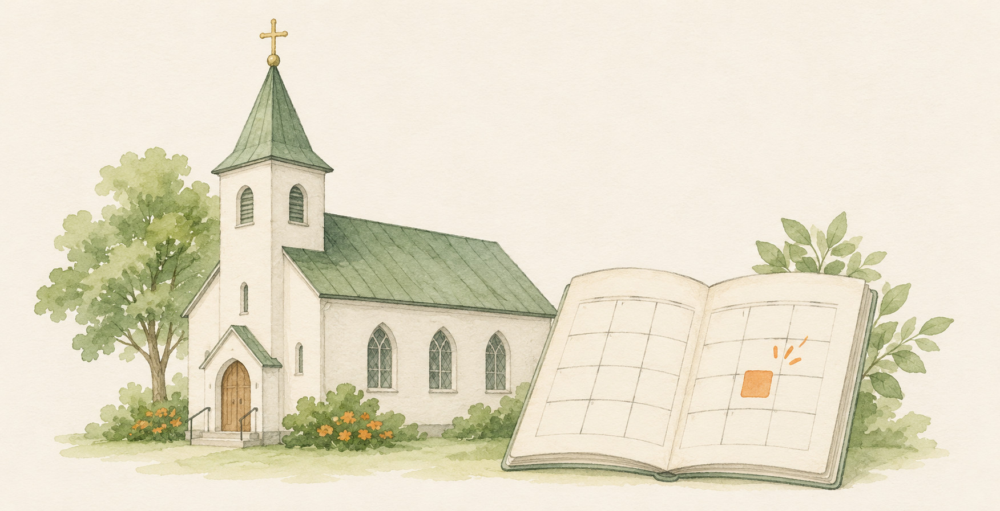
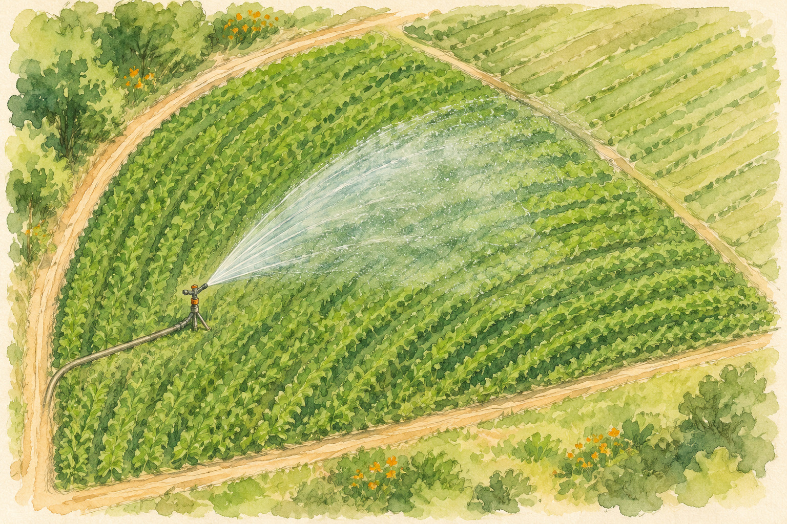
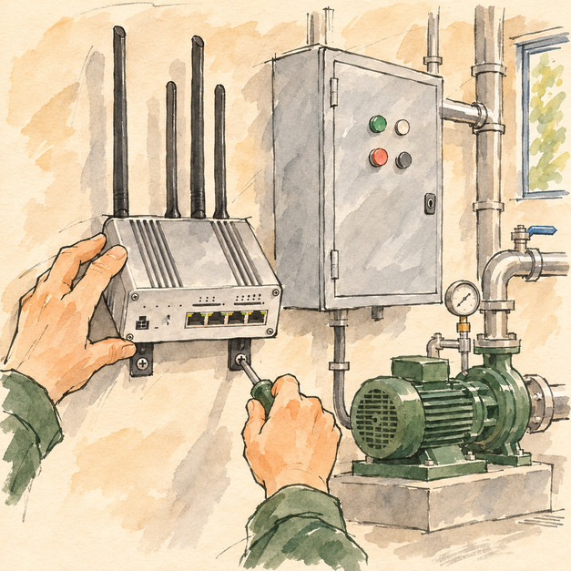
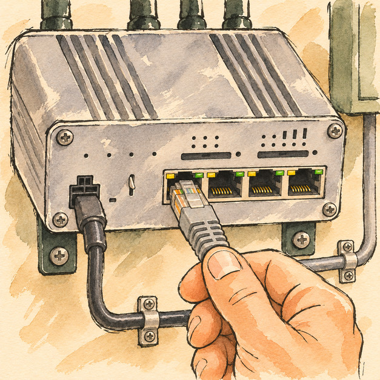
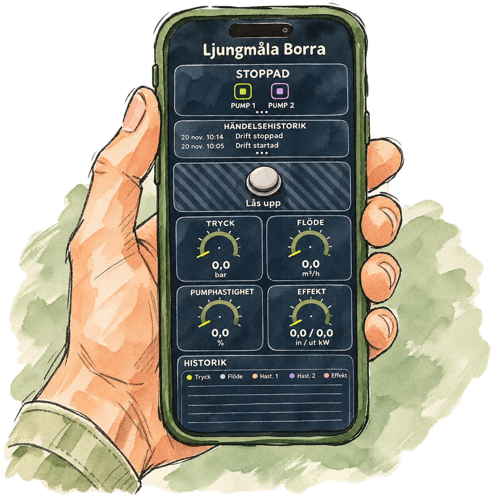
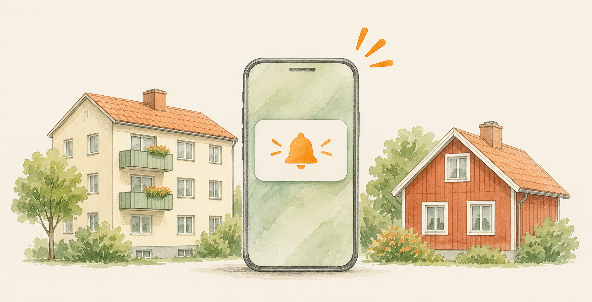
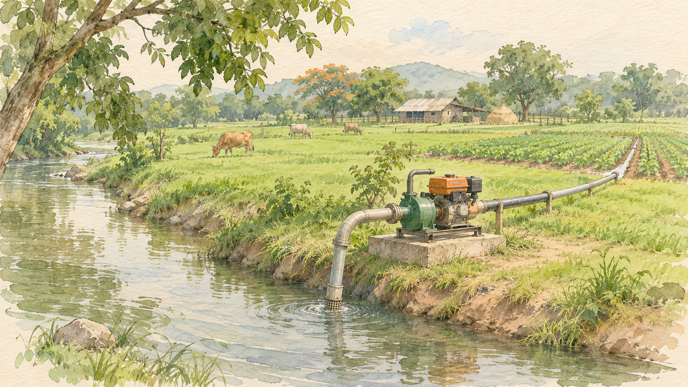
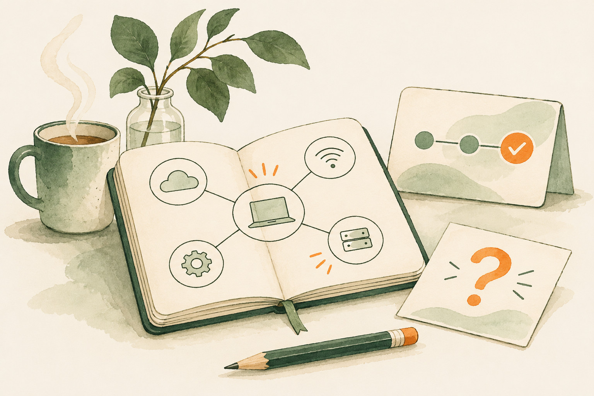

Enklare bokningar i kyrkan
Bokningssystemet är kopplat till kyrkans hemsida. Det förenklar klockringningen och gör det enkelt att ställa in temperatur och klimatanläggning inför exempelvis bröllop.
IoNod Bokningssystem →
Med IoNod på plats får du mer än överblick över din anläggning. Du kan styra utrustningen, ändra inställningar och hantera driften på distans, med funktioner som passar det du behöver göra.




Bokningssystemet är kopplat till kyrkans hemsida. Det förenklar klockringningen och gör det enkelt att ställa in temperatur och klimatanläggning inför exempelvis bröllop.
IoNod Bokningssystem →
Bostäder i Osby behövde larm som nådde fram. Vi installerade IoNod Larmcentral med SMS-larm och en app för pushnotiser.
IoNod Larmcentral →
Vid Helge å installerade vi pumpar för bevattning och 6 000 djur. Bonden kunde följa salthalten och växla pump när Helge å blev salt.
IoNod Pump →